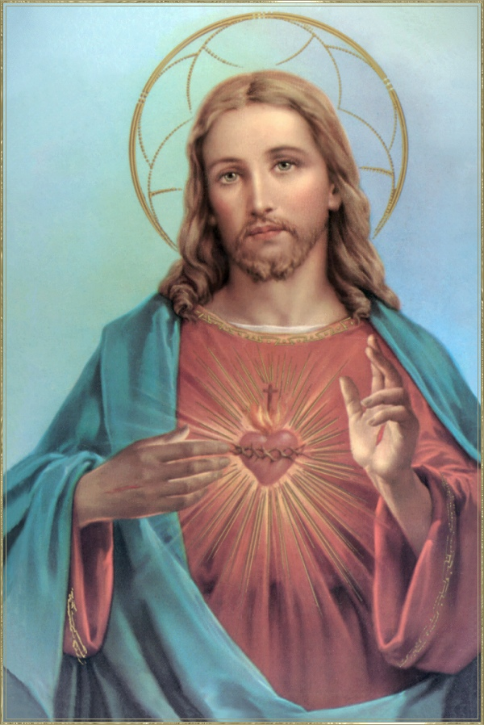
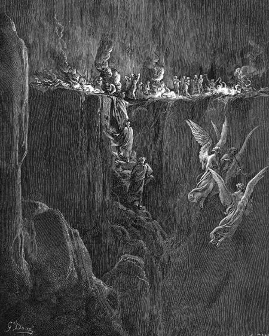

"PASTORAL DO PAPA BENTO XVI"
“No Dia de Finados não se comemora a Morte, mas a Ressurreição para a Vida em DEUS”.
BASE BÍBLICA
No Segundo Livro dos Macabeus, do Antigo Testamento, encontramos a citação a seguir, que confirma ser muito antigo o hábito benéfico de rezar pelos mortos: “Depois ajuntou, numa coleta individual, cerca de duas mil dracmas de prata, que enviou a Jerusalém para que se oferecesse um sacrifício propiciatório. Com ação tão bela e nobre ele tinha em consideração a ressurreição, porque, se não cresse na ressurreição dos mortos, teria sido coisa supérflua e vã orar pelos defuntos... Por isso, mandou oferecer o sacrifício expiatório, para que os mortos fossem absolvidos do pecado” (2Mc 12,43-45).
A COMEMORAÇÃO NA HISTÓRIA
“O fundador da festa foi Santo Odilon, abade de Cluny, o qual a introduziu em todos os Mosteiros de sua jurisdição, entre os anos 1000 e 1009”. “Na Itália, já se encontrava no fim do séc. XII e, em Roma, no início do ano 1300”. “Foi escolhido o dia 2 de novembro para ficar perto da comemoração de todos os Santos”.
NA TRADIÇÃO DA IGREJA
Tertuliano (†220) – Bispo de Cartago: “A esposa roga pela alma de seu esposo e pede para ele refrigério, e que volte a reunir-se com ele na ressurreição; oferecendo sufrágio todos os dias aniversários de sua morte” (De monogamia, 10).
Tertuliano atesta o uso de sufrágios na liturgia oficial de Cartago, que era um dos principais centros do cristianismo no século III: “Durante a morte e o sepultamento de um fiel, este fora beneficiado com a oração do sacerdote da Igreja”. ( De anima 51; PR, ibidem)
São Cipriano (†258) Bispo de Cartago, refere-se à oferta do sacrifício eucarístico em sufrágio dos defuntos como costume recebido da herança dos bispos seus antecessores (cf. epist. 1,2). Nas suas epístolas é comum encontrar a expressão: “oferecer o sacrifício por alguém ou por ocasião dos funerais de alguém”. (Revista PR, 264, 1982, pag. 50 e 51; PR ibidem)
São Cirilo, Bispo de Jerusalém (†386): “Enfim, também rezamos pelos santos padres e bispos e defuntos e por todos em geral que entre nós viveram; crendo que este será o maior auxílio para aquelas almas, por quem se reza, enquanto jaz diante de nós a santa e tremenda vítima” (Catequeses. Mistagógicas. 5, 9, 10, Ed. Vozes, 1977, pg. 38).
São Cirilo -“Da mesma forma, que rezamos a DEUS pelos defuntos, ainda que pecadores, não lhe tecemos uma coroa, mas apresentamos CRISTO morto pelos nossos pecados, procurando merecer e alcançar propiação junto a DEUS clemente, tanto por eles como por nós mesmos.”(idem)
SOBRE AS INDULGÊNCIAS
A Constituição Apostólica realça a Doutrina das Indulgências – Papa Paulo VI, 1967.
“A doutrina, assim como o uso das indulgências vigentes na Igreja Católica há vários séculos encontram sólido apoio na Revelação Divina, a qual vindo dos Apóstolos “se desenvolve na Igreja sob a assistência do ESPÍRITO SANTO”, enquanto “a Igreja no decorrer dos séculos, tende para a plenitude da Verdade Divina, até que se cumpram nela às palavras de DEUS”. (Dei Verbum, 8) ( DI, 1)
“Indulgência é a remissão,
diante de DEUS, da pena temporal devida aos pecados já perdoados quanto à culpa,
que o fiel, devidamente disposto e em certas e determinadas condições, alcança por
meio da Igreja (através do Sacramento da Penitência ou
Confissão e do Sacramento da Unção dos Enfermos), a qual, como dispensadora da redenção, distribui e aplica, com autoridade,
o tesouro das satisfações de CRISTO e dos Santos”. (Norma 1)

“Assim nos ensina a revelação Divina que os pecados acarretam como consequência penas infligidas pela Santidade e Justiça de DEUS, penas que devem ser pagas ou neste mundo, mediante os sofrimentos, dificuldades e tristezas desta vida e, sobretudo mediante a morte, ou então no século futuro...” (DI, 2)
“Pelas indulgências, os fiéis podem obter para si mesmos e também para as almas do Purgatório, a remissão das penas temporais, sequelas dos pecados.” (CIC, 1498)
CONDIÇÕES PARA ALCANÇAR A INDULGÊNCIA PLENÁRIA
Para si ou para uma alma:
1 – Se confessar bem, rejeitando todo pecado.
2 – Participar da Santa Missa e Comungar com esta intenção.
3 – Rezar pelo Papa ao menos um Pai Nosso, Ave Maria e Glória.
4 – Visitar o cemitério e rezar pelo falecido.
Observação – O item 4 pode ser substituído por: Terço em família diante de um oratório, ou Via Sacra na Igreja; ou meia hora de adoração ao Santíssimo, ou meia hora de leitura Bíblica meditada.
EPÍLOGO
O Catecismo da Igreja ensina: §1853 - A raiz do pecado está no coração do homem, em sua livre vontade, segundo o ensinamento do SENHOR: "Com efeito, é do coração que procedem as más intenções, assassínios, adultérios, prostituições, roubos, falsos testemunhos e difamações. São essas as coisas que tornam o homem impuro" (Mt 15,19-20). É no coração que reside a caridade, princípio das obras boas e puras, que o pecado também fere.

Oração de Santa Gertrudes
Eterno PAI, eu Vos ofereço o preciosíssimo Sangue do Vosso Divino FILHO JESUS, em união com todas as Missas que hoje são celebradas em todo o mundo, por todas as Santas Almas que estão no Purgatório, pelos pecadores em todos os lugares da Terra, pelos pecadores na Igreja Católica, pelos pecadores em todas as outras Igrejas, pelos pecados de minha casa e pelos pecados de meus vizinhos. Amém!
Coração de JESUS, fonte de Amor, que abrasais os corações, converta os pecadores, salvai os moribundos e aliviai as Almas do Purgatório! Amem.
ARGUMENTOS FALSOS CONTRA O PURGATÓRIO
Algumas religiões e pessoas que não professam nenhuma crença, utilizam como recurso de crítica, citar versículos da Bíblia Sagrada. Eles citam os versículos bíblicos mas alteram o teor da verdade, apresentando uma argumentação fantasiosa e falsa, que modifica totalmente o pensamento do escritor inspirado, conforme se encontra nas Sagradas Escrituras. Explicam o texto mostrando o conteúdo de modo diferente. Em outras palavras, eles fundamentam a sua lógica numa interpretação distorcida e errônea do texto sagrado com a intenção de querer provar que o Purgatório não existe. Citamos a seguir três exemplos para observação:
Escreve o representante de uma religião:
Eu mesmo não poderia dizer de uma
forma melhor que o Purgatório é rejeitado, pois realmente "... as boas obras não contribuem
para a salvação da pessoa." A Bíblia diz que a salvação é um "dom" ["Pela graça fostes salvos, por meio da fé,
e isso não vem de vós, é o dom de DEUS: não vem das obras, para que ninguém se encha de
orgulho." (Efésios 2,8-9) A salvação é um dom gratuito, quem realmente
creu em CRISTO não precisa do Purgatório.
O texto continua com os seguintes argumentos:
A doutrina do Purgatório da Igreja Católica
implica na admissão da ineficiência do Sangue de CRISTO, embora lemos em São João:
"...e o sangue de JESUS, seu FILHO, nos
purifica de todo pecado". (1 Jo 1,7)
Ele pergunta: Será que o fogo do
Purgatório é mais eficaz do que o Sangue de CRISTO? Então para que serve o Sangue de
CRISTO?
E também cita outros versículos, semelhantes, como este do
Apocalipse: "Estes são os que vêm
da grande tribulação (como as perseguições de Nero)
; lavaram suas vestes e
alvejaram-nas no Sangue do Cordeiro".
(Ap 7, 14)
Sem dúvida, todo fiel sabe que a Salvação vem de CRISTO. O Sangue Divino derramado na Cruz lavou a alma de todas as gerações: as que existiram nos séculos anteriores, aquela que vivia na época DELE e as gerações vindouras. A “graça” gerada no Sangue Redentor do SENHOR purificou a humanidade de todos os tempos. Significa dizer, que independentemente da fé e da vontade das pessoas, JESUS libertou a humanidade da força do Pecado Original e dos Pecados Subsequentes, aqueles que foram cometidos desde o Inicio da Criação até a Morte e Ressurreição de JESUS. Então pela “graça” do Sangue do SENHOR, todos nós fomos salvos da condenação prematura de uma herança maldita do pecado. E evidentemente, esta realidade não dependeu de ninguém, mas essencialmente da Vontade de DEUS.
Se a humanidade morresse após a Ressurreição do SENHOR, todos, sem exceções, iriam direto para o Céu, beneficiados pelo poder purificador da "graça" gerada no Sangue Redentor de JESUS. Todos estariam limpos e purificados porque não haveria tempo para que ocorressem outras transgressões e pecados. Como exemplo temos as palavras do SENHOR no momento da Cruz. O "bom ladrão" chamado Dimas, pregado na cruz por suas culpas sabia que o desfecho seria a morte, então percebendo o poder misterioso do SENHOR, suplicou: "JESUS lembra-te de mim, quando vieres com teu reino". O SENHOR respondeu: "Em verdade, EU te digo, hoje estarás comigo no Paraíso". (Lc 23,42-43) A "graça" gerada no Sangue Redentor de CRISTO, purificou e apagou todas as transgressões e os pecados cometidos também por aquele homem, porque ele acreditou em JESUS, sentiu que ELE poderia lhe proporcionar uma vida muito melhor, por isso, ele ganhou o Céu.
Entretanto a humanidade permaneceu viva e a vida continuou, ensejando a satanás e aos seus asseclas um vastíssimo campo de atuação, seduzindo e traiçoeiramente desencaminhando as pessoas pela estrada da violência e da impiedade, dando origem as desavenças, as brigas, as guerras e a uma sucessão impressionante de acontecimentos espantosos, culminando com os crimes hediondos e a morte. Por isso mesmo, JESUS conhecendo profundamente as criaturas, deixou-nos a sua Obra admirável, os seus ensinamentos, o seu exemplo de Homem, instituiu os sete Sacramentos para santificar a nossa vida ao longo da caminhada existencial e ainda deixou-nos sua MÃE, para ser a nossa Mãe Espiritual, a advogada, a medianeira e intercessora eficaz de todas as causas, para intermediar junto a JESUS, seu amado FILHO, em favor daqueles que necessitam, auxiliando todos que suplicam o seu generoso e tão inestimável auxílio.
Significa dizer, que o SENHOR se preocupou em deixar um "Testamento" por causa dos pecados que iam acontecer. Sabendo das fraquezas e limitações da humanidade, compreendeu que sozinhos não temos meios para enfrentar as forças do mal, tínhamos necessidade de sermos amparados a fim de vencermos os obstáculos que surgem no cotidiano.
Se JESUS não tivesse vindo, ninguém teria salvação. E por isso mesmo, ELE veio com a intenção de nos Redimir e Salvar, sofrendo todas as crueldades e o horror da Cruz, derramando o seu Divino Sangue sobre a humanidade de todas as gerações, libertando-nos dos pecados passados, inclusive do Pecado Original e deixando meios eficazes para continuarmos no presente, vivendo em santidade. Então é necessário discernir: não basta o fiel dizer que ama e que acredita em JESUS porque já está perdoado por ELE, pelo valor de seu Sagrado Sangue derramado por todos nós. É preciso que as pessoas demonstrem ao SENHOR a sua fidelidade, através de seus atos e do procedimento no cotidiano, revelando a grandeza de sua amizade a DEUS seguindo os mandamentos e os ensinamentos Divino, e mostrando as dimensões de seu amor através das práticas espirituais e do exercício da caridade e da fraternidade com o próximo. Diante do acontecimento do próprio pecado, deverá ter a necessária humildade e buscar o Sacramento da Reconciliação, purificando-se de suas transgressões e alcançando o "estado de graça" indispensável a receber o SENHOR Sacramentado durante a Santa Missa.
A primeira epístola de São João que o crítico mencionou apenas um pequeno trecho de um versículo, apresenta no restante do mesmo versículo, um necessário esclarecimento de que o fiel para ser beneficiado no presente, ou seja, na atualidade, pelo Sangue do SENHOR, deverá praticar e cultivar os recursos colocados a nossa disposição pela Obra Redentora, a fim de alcançar a santidade necessária a sua existência: "Mas se caminhamos na luz, (seguindo os preceitos de DEUS) como ELE está na luz, estamos em comunhão uns com os outros, (vivendo fraternalmente, como irmãos,) e o Sangue de JESUS (que simboliza e representa a eficácia da Obra Redentora), seu FILHO, nos purifica de todo o pecado. (1 Jo 1,7)
Por último, o crítico menciona versículos do Apocalipse (Ap 7, 9-15), que se referem ao triunfo dos eleitos no Céu, aqueles que lavaram as suas vestes e as alvejaram (purificaram) no Sangue do Cordeiro (JESUS). Ou seja, aqueles que acolheram fielmente a Obra Redentora do SENHOR e a colocaram em prática na sua existência, caminhando na luz na expressão de São João, rompendo com o pecado, observando os Mandamentos, principalmente o da Caridade, preservando-se do mundo e fugindo das tentações do demônio.
O exemplo de vida do SENHOR é o modelo perfeito para ser seguido! Se a pessoa não consegue imitá-lo, embora se esforce em fazê-lo, terá a salvação garantida, mesmo se cometer alguma transgressão. Como é lógico, não poderá entrar diretamente no Céu, porque a Alma terá que ficar livre das manchas de todos os seus pecados. Primeiro, terá que se submeter a uma purificação, removendo as nódoas dos pecados remanescentes e então, alcançará a santidade necessária para entrar no Reino de DEUS.
Isto é uma realidade tão evidente, que não é compreendida somente por aqueles que permanecem com os olhos abertos para os seus interesses e seus argumentos pessoais. Não se trata de questionar o poder do Sangue de CRISTO! É claro que se JESUS não tivesse vindo não haveria nem o Purgatório, ou seja, nem a necessidade da "purificação", porque todos nós, sem exceções, estaríamos condenados pelos nossos pecados. Por isso mesmo, diante da magnífica Obra Redentora do SENHOR, a "purificação" é praticamente uma exigência da própria Alma, que arrependida pelos pecados cometidos, quer se livrar de todas as cicatrizes de suas transgressões, para aparecer bonita, pura e santa diante de DEUS.
O SENHOR recomenda: "Sede santos, porque EU, vosso DEUS, Sou Santo". (Lv 19, 2)
Assim sendo, as pessoas que não querem acolher a Obra de JESUS, não se esforçam em imitá-LO e não tem a menor disposição e nem o interesse em fazê-lo, porque imaginam que a Obra Redentora do SENHOR já perdoou por antecipação todos os seus pecados passados e inclusive, já perdoou também, aqueles que ainda estão sendo projetados e tramados a serem cometidos no presente! Mas é lícito pensar assim? Aqueles que seguem este caminho depois terão que enfrentar a Justiça Divina e amargar as consequências de seu procedimento e da sua própria decisão.
A IMAGINAÇÃO TAMBÉM EXPLICA A DOUTRINA
Os Anjos foram criados por DEUS para ajudá-LO
nas diversas missões e sobretudo 
Se durante a vida a Alma buscou construir uma
sólida e carinhosa amizade com o SENHOR, começará colher a recompensa, porque
o seu Anjo a receberá sorridente com o livro de ocorrências nas mãos indicando-lhe o
caminho do Céu. Entretanto, a Alma compreenderá que não conseguirá encontrar DEUS,
enquanto não limpar totalmente as manchas remanescentes de seus pecados. Ela
sentirá uma abominável e perturbadora amargura ao perceber a grandeza dos danos
que o maligno lhe causou, e que terá de eliminá-los porque eles se agigantam como
uma tenebrosa nuvem escura que lhe impede a Visão Beatífica de DEUS.
Triste com a realidade, sentirá então, um terrível pavor e uma tremenda
repulsa pelos pecados cometidos e naquele momento compreenderá a necessidade
da "purificação" começando a viver as dores de seu "Purgatório", sofrendo por ter que
reter a intensidade e a grandeza do amor que sente necessidade de se manifestar a DEUS.
Concluída a sua pena, ninguém jamais conseguirá interromper a sua trajetória que
alcançará o objetivo final de toda a sua existência. Completamente pura e
ansiosa, será conduzida
pelo seu Anjo da Guarda a presença do CRIADOR.
Entretanto, se durante a vida, a Alma foi indiferente e viveu sempre longe de DEUS, encontrará o seu Anjo da Guarda sem o sorriso da boa recepção. Ele estará lendo o livro de ocorrências onde estão descritos os acontecimentos de sua existência, com todos os fatos desde o seu nascimento. Depois, pronunciará a sentença da Justiça Divina. Sem qualquer outro comentário, o Anjo deixará aquela Alma, que em queda livre cairá no Inferno.
No mundo existem cristãos, protestantes, budistas, hindus, maometanos, islamitas, luteranos, as tribos da antártica, as tribos africanas, os índios e muitos outros povos de origens diversas que professam uma religião e muitos que não professam nenhuma religião. Sem exceções, todos podem se salvar, dependendo essencialmente da vontade e da aplicação de cada um e não de seus conhecimentos, da sua riqueza, de sua posição social ou política, da sua sagacidade e sabedoria, ou da sua cultura. A misericórdia do CRIADOR é muito grande e ela se manifesta em favor de todos. DEUS concede uma medida da sua graça como dádiva aos incrédulos (1Co 1.4; 15.10), (Mt 5,45), a fim de poderem crer no Senhor JESUS CRISTO (Ef 2.8,9; Tt 2.11; 3.4). Por isso, para merecer a atenção Divina, o fundamental é saber viver como uma pessoa de bem, exercitando o direito, a justiça, e praticando o amor fraterno. Mesmo não frequentando nenhuma religião, o primordial para a salvação de uma criatura é que ela procure demonstrar pelas atitudes e comportamento ao longo de sua existência, que tem um sincero respeito pelas pessoas, que trata todos com dignidade, como se fossem verdadeiros irmãos e primordialmente, que acredita em JESUS. Isto porque, na realidade, todos nós que vivemos neste magnífico e imenso planeta, fomos inventados e criados por um Único e Maravilhoso DEUS que verdadeiramente é o nosso PAI e CRIADOR, que protege e beneficia todos os seus filhos que buscam o seu Divino Amor. Diante de DEUS todos nós temos a mesma recepção. Todavia, o manancial de graças e virtudes que ELE derrama sobre a humanidade é acolhido de maneira diferente pelas pessoas, porque elas não se abrem com o mesmo calor afetivo para recebê-las. Umas são mais acolhedoras e calorosas, outras são completamente indiferentes as ofertas do SENHOR. Uns praticam o "bem" e procuram ser "autênticos e corretos". Outros, trilham caminhos obscuros e desconhecem a Luz de DEUS. Todavia, o homem ou a mulher sem a Graça de DEUS podem fazer o bem natural e evitar o mal; mas não conseguirão fazer "todo o bem" e nem observarão "toda lei natural" a fim de evitar "todo pecado". Por isso mesmo, a caminho da eternidade todas as Almas terão que ser totalmente purificadas, removendo todas as manchas e cicatrizes dos pecados, para finalmente elas poderem vislumbrar a Glória de DEUS e encontrar o SENHOR.
Como ilustração, para o texto acima, na primeira Aparição de NOSSA SENHORA as três crianças em Fátima, Portugal, no dia 13 de Maio de 1917, Lúcia perguntou a VIRGEM MARIA sobre a sorte de duas meninas suas amigas, recentemente falecidas. ELA respondeu que a mais nova, de 16 anos, já estava no Céu; e a outra de 18 a 20 anos estava no Purgatório e lá ia permanecer por muito tempo, até o dia do Juízo Final (purificando por causa de seus muitos pecados).
Qualquer pessoa tem capacidade para compreender com segurança o comportamento das duas jovens e saber sobretudo que, sem a "Graça de DEUS" é muito difícil alcançar a Vida Eterna.
Numa segunda ilustração, recordamos a primeira "Graça" alcançada de DEUS por Santa Terezinha do Menino JESUS, em favor de um condenado. Henrique Pranzini um francês ateu e violento, em 1887 na França, por dinheiro estrangulou sua amante milionária Regina de Montille, sua filha de doze anos, e uma empregada. Preso pelo tríplice assassinato, declarava "inocência" e passava os dias lendo livros obscenos e jactava-se de não temer a condenação eterna. Em vão vários sacerdotes o visitaram. Ele não dava qualquer sinal de arrependimento sincero. Os jornais noticiaram seguidamente os acontecimentos que alcançaram em Lisieux uma jovem de 14 anos: Teresa Martin (futura Santa Terezinha). A Santinha naquela época sentia em sua alma um forte apelo de JESUS, para transformá-la em "pescadora de almas". Cresceu nela um imenso desejo de "trabalhar" pela conversão dos pecadores. Assim estava Teresa Martin quando Pranzini foi condenado a morte. Ela, impulsionada pelo fervor da "nova missão", se pôs a campo para livrá-lo, depois da morte física, da condenação eterna de sua alma. Rezou, mandou celebrar Missas e fez sacrifícios naquela intenção. Sua confiança na misericórdia de DEUS era tão grande que lhe dava a certeza de que a alma daquele infeliz seria salva, mesmo se ele não se confessasse. Todavia, com humildade, pedia a JESUS apenas "um sinal" de arrependimento do criminoso, "simplesmente para a minha consolação", dizia ela. E o sinal foi dado! No dia seguinte a execução, ela leu no jornal "La Croix": Às cinco horas da manhã, abriu-se a porta da prisão para o pátio onde surgiu o condenado; o Padre Faure capelão postou-se à sua frente e ele o repeliu, empurrando-o. O carrasco Deibler colocou seu pescoço na guilhotina ao tempo que do outro lado, um ajudante segurou os seus cabelos para firmar a cabeça. Porém, antes da lâmina descer, um relâmpago de arrependimento atravessou a consciência do criminoso. Pediu ao Capelão o crucifixo e "beijou JESUS duas vezes". Depois o cutelo caiu e a cabeça de Pranzini rolou. Aqui podemos concluir que a justiça dos homens foi realizada e talvez, aquele derradeiro ósculo tenha satisfeito também a Justiça Divina, que pede sobretudo, o "arrependimento sincero", mesmo que seja no último momento. Assim, ele escapou do inferno, sem dúvida, graças a intercessão poderosa de Santa Terezinha, mas terá que purificar a sua alma no Purgatório, e permanecerá nas chamas purificadoras até cumprir integralmente todas as penas de sua culpa.
Encerrando, esperamos que este trabalho
lhe seja útil e possa servir como um veículo de informação. Por isso mesmo,
se agora estiver com a Alma enlevada e motivada a caminhar em direção ao SENHOR,
convido-lhe a ouvir uma linda melodia com o Padre Zeca, "Noites Traiçoeiras".
Desejando ouvir, clique na figura animada abaixo.